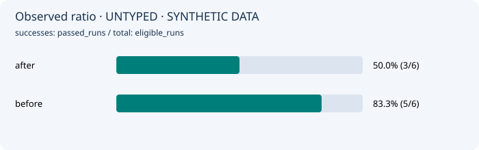

SYNTHETIC DATA · OFFLINE-RECORDED
OFFLINE RECORDED RESPONSES: fixed example actions, not new model decisions; no API calls.
数据调查 · 可复跑证据
Compare simulation pass rates between before and after, check the denominator, and return replayable evidence.
answered交付状态
9实际工具动作
1可见错误
0Live 请求尝试
通用分析/图表仅计算选定查询列的 successes / total；non_successes 是 total - successes，不能据此自动解释为准时/延误。列名和 source_evidence_id 保留来源，不代表已验证业务口径。模型/脚本的自由文本解读、因果说法和业务批准仍未经算术验证。
模型/脚本提供的解读
The SQL and rate comparison record the observed pass rates for this synthetic example. This fixed narration is not a new model judgment.
答案证据：[e006]；支持证据：[e002] [e003] [e007] [e008]
来源、类型、形状校验不代表数值正确或支持内容相关。
调用方冻结的答案契约
{"answer_evidence_id":"e006","supporting_evidence_ids":["e002","e003","e007","e008"],"caller_answer_contract":{"version":1,"columns":[{"name":"period_key","type":"string","nullable":false},{"name":"passed_runs","type":"integer","nullable":false},{"name":"eligible_runs","type":"integer","nullable":false}],"min_rows":2,"max_rows":2},"answer_contract_sha256":"18c9800f10220d48a5313a7947446af1811d586500f9a7390c1240938d6bf46e","validation_scope":"Source/type/shape only; not numerical correctness or support relevance"}- The query counts passed and failed simulation runs once each and excludes cancelled runs, as specified in the supplied metric. The arithmetic is attached in the cited evidence; it does not establish causation.

successes: passed_runs / total: eligible_runs · 源查询 e006 · 图表 e008
数据来源与快照
冻结的来源、许可及本地审核记录；不代表重新核验来源或隐私保证。
{"type":"synthetic","declaration":{},"catalog_sha256":"dac2581ce9326a66041f030f7526106edc1b9f21eb87999bc95f42b0888f1805"}
从目标到交付的实际动作
展开查看输入与返回。
下一动作的公开说明展示操作变化；不收集模型私有推理。引用存在不代表结论语义已被自动证明。
e001 · read_context OK
Read the supplied metric and inspect the custom simulation schema.
模型第 1 轮 · 批次第 1 项；选择时最后可见证据：开始
上一执行动作：开始
实际输入
{"document":"catalog"}实际返回
{"ok":true,"data":{"version":"1.0","synthetic":true,"description":"Original hand-created simulation test data; no employer, patient or production records.","tables":[{"name":"simulation_runs","file":"simulation_runs.csv","grain":"One row per simulation run, identified by run_id","columns":[{"name":"run_id","type":"TEXT"},{"name":"period_key","type":"TEXT"},{"name":"variant","type":"TEXT"},{"name":"outcome","type":"TEXT"}]}]}}e002 · read_context OK
Read the supplied metric and inspect the custom simulation schema.
模型第 1 轮 · 批次第 2 项；选择时最后可见证据：开始
上一执行动作：e001
实际输入
{"document":"metric"}实际返回
{"ok":true,"data":{"text":"# Synthetic simulation pass rate\n\nAll records were invented for this public integration example. They are not model evaluation results.\nThe entity is one simulation run, uniquely identified by run_id. The numerator is\noutcome = passed; the denominator includes passed and failed runs. Cancelled runs\nare excluded. Empty outcomes are excluded and should be reported if present.\nperiod_key is an explicitly assigned experimental window (before or after), not\na timestamp; timezone and calendar boundaries are not used. Compare before as\nthe baseline with after as the current window. This document supplies the metric\nfor this synthetic example only; it grants no authority over another dataset.\nA descriptive rate change is not a causal effect of the variant or any treatment.\n"}}e003 · inspect_schema OK
Read the supplied metric and inspect the custom simulation schema.
模型第 1 轮 · 批次第 3 项；选择时最后可见证据：开始
上一执行动作：e002
实际输入
{}实际返回
{"ok":true,"data":{"tables":[{"name":"simulation_runs","columns":[{"name":"run_id","type":"TEXT","primary_key":false},{"name":"period_key","type":"TEXT","primary_key":false},{"name":"variant","type":"TEXT","primary_key":false},{"name":"outcome","type":"TEXT","primary_key":false}]}]}}e004 · query ERROR · 已保留
Deliberately exercise an incorrect column; this fixed example is not a model decision.
模型第 2 轮 · 批次第 1 项；选择时最后可见证据：e003
上一执行动作：e003
实际输入
{"sql":"SELECT reporting_week FROM simulation_runs"}实际返回
{"ok":false,"error":{"type":"OperationalError","message":"no such column: reporting_week"}}e005 · inspect_schema OK
Retain the error and inspect the available columns.
模型第 3 轮 · 批次第 1 项；选择时最后可见证据：e004
上一执行动作：e004
实际输入
{}实际返回
{"ok":true,"data":{"tables":[{"name":"simulation_runs","columns":[{"name":"run_id","type":"TEXT","primary_key":false},{"name":"period_key","type":"TEXT","primary_key":false},{"name":"variant","type":"TEXT","primary_key":false},{"name":"outcome","type":"TEXT","primary_key":false}]}]}}e006 · query OK
Use period_key and the supplied eligibility definition.
模型第 4 轮 · 批次第 1 项；选择时最后可见证据：e005
上一执行动作：e005
实际输入
{"sql":"SELECT period_key, SUM(CASE WHEN outcome = 'passed' THEN 1 ELSE 0 END) AS passed_runs, COUNT(*) AS eligible_runs FROM simulation_runs WHERE outcome IN ('passed', 'failed') GROUP BY period_key ORDER BY period_key"}实际返回
{"ok":true,"data":{"columns":["period_key","passed_runs","eligible_runs"],"rows":[{"period_key":"after","passed_runs":3,"eligible_runs":6},{"period_key":"before","passed_runs":5,"eligible_runs":6}],"row_count":2,"truncated":false}}e007 · analyze OK
Compute rates from the actual SQL results.
模型第 5 轮 · 批次第 1 项；选择时最后可见证据：e006
上一执行动作：e006
实际输入
{"operation":"compare_rates","evidence_id":"e006","period":"period_key","baseline":"before","current":"after","successes":"passed_runs","total":"eligible_runs"}实际返回
{"ok":true,"data":{"baseline":{"period":"before","successes":5,"total":6,"rate":0.8333333333333334,"non_successes":1},"current":{"period":"after","successes":3,"total":6,"rate":0.5,"non_successes":3},"delta_percentage_points":-33.333333333333336,"non_success_count_change":2,"scope":"Descriptive arithmetic on selected columns only. non_successes = total - successes; this complement is not necessarily late. Metric meaning, business approval, causality and statistical significance are not verified.","rate_semantics":"untyped_ratio","source_columns":{"successes":"passed_runs","total":"eligible_runs","period":"period_key"},"source_evidence_id":"e006"}}e008 · plot OK
Plot the observed counts, with their source-column bindings.
模型第 6 轮 · 批次第 1 项；选择时最后可见证据：e007
上一执行动作：e007
实际输入
{"evidence_id":"e006","label":"period_key","successes":"passed_runs","total":"eligible_runs"}实际返回
{"ok":true,"data":{"points":[{"label":"after","rate":0.5,"successes":3,"non_successes":3,"total":6},{"label":"before","rate":0.8333333333333334,"successes":5,"non_successes":1,"total":6}],"svg":"<svg xmlns=\"http://www.w3.org/2000/svg\" viewBox=\"0 0 700 219\" role=\"img\" aria-label=\"Observed untyped ratios from query columns, SYNTHETIC DATA\"><metadata>{"type": "synthetic", "declaration": {}, "catalog_sha256": "dac2581ce9326a66041f030f7526106edc1b9f21eb87999bc95f42b0888f1805"}</metadata><desc>successes: passed_runs / total: eligible_runs. Metric meaning and business approval are unverified.</desc><rect width=\"700\" height=\"219\" rx=\"12\" fill=\"#f3f6fb\"/><text x=\"22\" y=\"30\" fill=\"#17304d\" font-family=\"sans-serif\" font-size=\"17\">Observed ratio · UNTYPED · SYNTHETIC DATA</text><text x=\"22\" y=\"52\" fill=\"#17304d\" font-family=\"sans-serif\" font-size=\"12\"><title>successes: passed_runs / total: eligible_runs</title>successes: passed_runs / total: eligible_runs</text><text x=\"22\" y=\"100\" font-family=\"sans-serif\" font-size=\"13\">after</text><rect x=\"170\" y=\"82\" width=\"360\" height=\"26\" rx=\"4\" fill=\"#dce4ef\"/><rect x=\"170\" y=\"82\" width=\"180.00\" height=\"26\" rx=\"4\" fill=\"#007f7a\"/><text x=\"545\" y=\"100\" font-family=\"sans-serif\" font-size=\"13\">50.0% (3/6)</text><text x=\"22\" y=\"156\" font-family=\"sans-serif\" font-size=\"13\">before</text><rect x=\"170\" y=\"138\" width=\"360\" height=\"26\" rx=\"4\" fill=\"#dce4ef\"/><rect x=\"170\" y=\"138\" width=\"300.00\" height=\"26\" rx=\"4\" fill=\"#007f7a\"/><text x=\"545\" y=\"156\" font-family=\"sans-serif\" font-size=\"13\">83.3% (5/6)</text></svg>","rate_semantics":"untyped_ratio","source_columns":{"successes":"passed_runs","total":"eligible_runs","label":"period_key"},"source_evidence_id":"e006"}}e009 · finish OK
Finish the fixed offline protocol example; numeric results are in the cited evidence.
模型第 7 轮 · 批次第 1 项；选择时最后可见证据：e008
上一执行动作：e008
实际输入
{"status":"answered","summary":"The SQL and rate comparison record the observed pass rates for this synthetic example. This fixed narration is not a new model judgment.","findings":[{"text":"The query counts passed and failed simulation runs once each and excludes cancelled runs, as specified in the supplied metric. The arithmetic is attached in the cited evidence; it does not establish causation."}],"questions":[],"answer_evidence_id":"e006","supporting_evidence_ids":["e002","e003","e007","e008"]}实际返回
{"ok":true,"data":{"status":"answered","summary":"The SQL and rate comparison record the observed pass rates for this synthetic example. This fixed narration is not a new model judgment.","findings":[{"text":"The query counts passed and failed simulation runs once each and excludes cancelled runs, as specified in the supplied metric. The arithmetic is attached in the cited evidence; it does not establish causation."}],"questions":[],"answer_evidence_id":"e006","supporting_evidence_ids":["e002","e003","e007","e008"],"conditions":[],"clarifications":[]}}